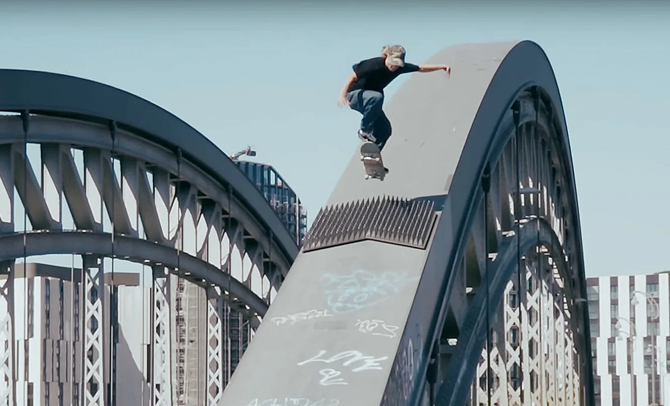
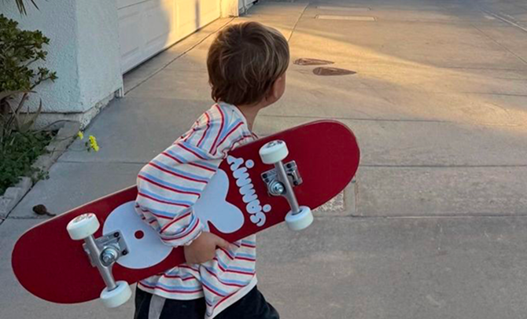
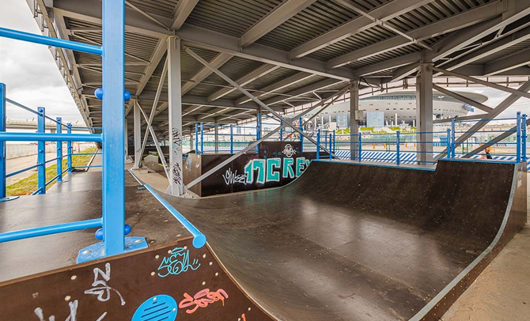
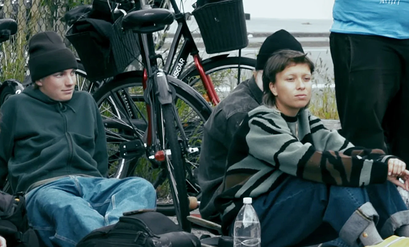

Наши ребята выбили возможность для райдеров из России принять участие в розыгрыше новых досок из совместного проекта Carhartt WIP и Quartersnacks.
Теперь скейтбординг выходит за привычные рамки прогулок во дворе.
Наш райдер Макс Орлов заметил, как ребенок боялся подойти к рампе и спросил, не хочет ли он попробовать прокатиться, на что тот грустно ответил: "Я не умею и боюсь".
Не бойся — бейся. Ребята из РАМП открыли школу для юных скейтбордистов!


Наши ребята нашли заброшенную бетонную площадку за стадионом.
Полгода переговоров с администрацией района, куча эскизов на салфетках и помощь локальных подрядчиков — и на Крестовском появился маленький, но свой скейт-парк!
Без вывесок и охраны. Только бетон и свобода.

РАМП запустили проект по обмену экипировкой в поддержку стремления отойти от консьюмеризма!
В нашем магазине есть полка, куда можно принести старую экипировку и взять что-то другое бесплатно или за символическую доплату.
За три месяца через обменник прошло больше 50 дэк, 30 пар подвесок и бесконечное количество колёс. Дети из нашей школы получили свои первые доски именно отсюда.